基础响应combined_depth_ir_darkline
基础线族[8, 8]
新方案点数64
新方案线族[8, 8]
补全面均分0.946
骨架 junction777
新方案：combined_response + depth_gradient + Hessian ridge + Frangi-like
-> 二值候选 -> skeleton 诊断 -> completed_surface_mask -> DP 曲线 -> 曲线交点。
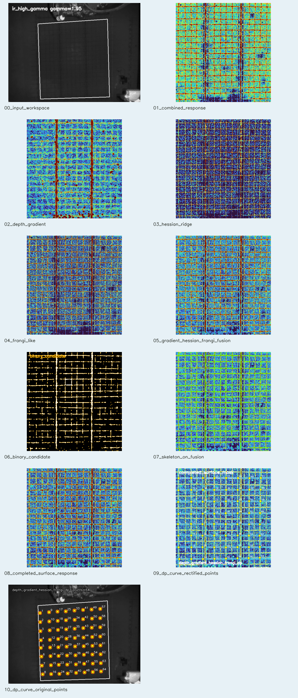
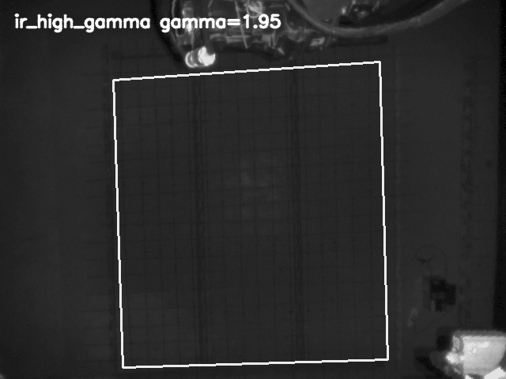
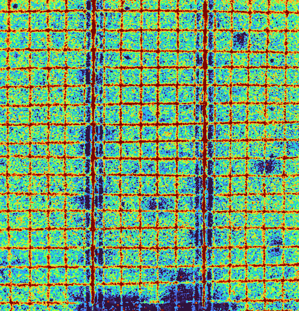
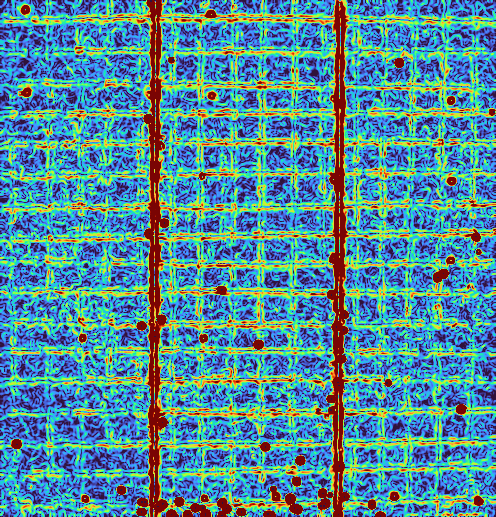
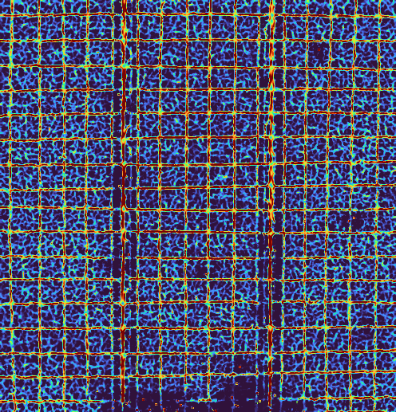
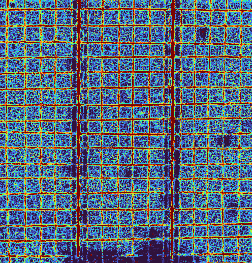
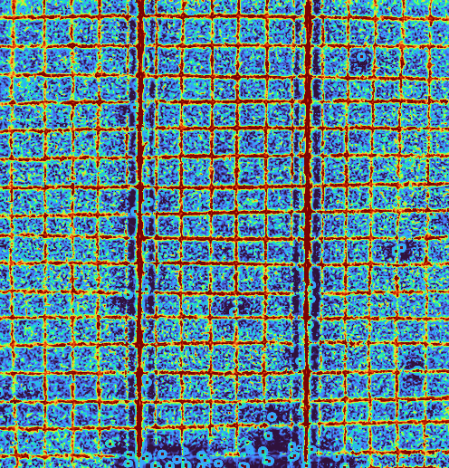
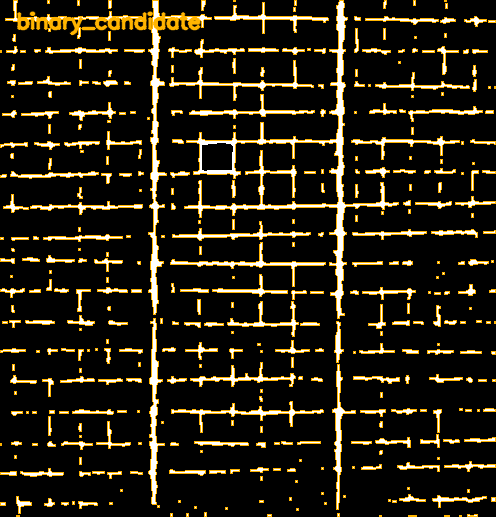
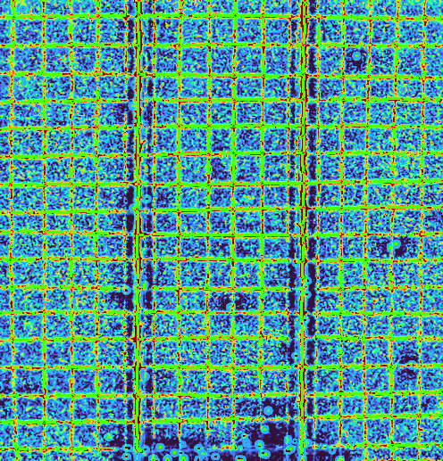
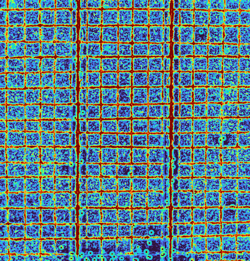
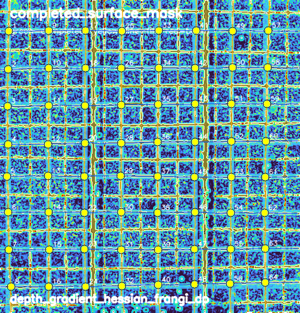
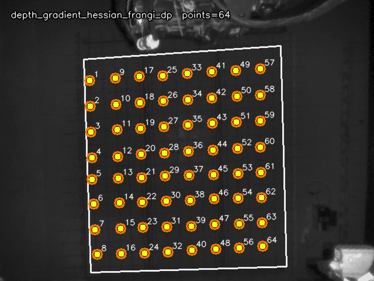